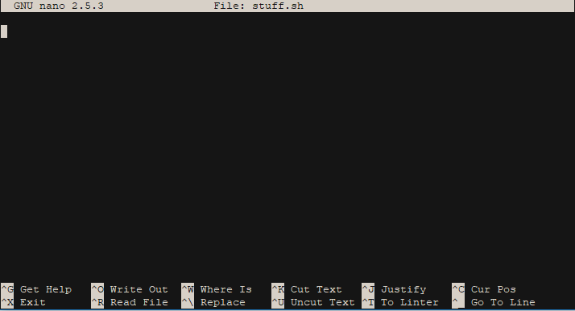

Introduction
Welcome to Let's Linux, please keep in mind this is a work in progress. On this site you will find an easy to understand guide on how to use the Linux Operating System in your projects or your everyday life.
Why should I use Linux? There are many reason why you might want to give Linux a try. It is such a versatile and expandable operating system that it can be used for a number of tasks requiring stability and performance.
- Computer Science
- IOT and Electronics Projects
- Server Hosting
- Desktop Productivity Use
On this site we will cover the basic skills you need to get started with Linux in these areas.
Whenever you see this symbol, make note of it because its probably important:
The Shell
The shell is the part of Linux that scares people away. In reality its actually quite simple and if you get really good at it, it's faster than the GUI. The very first thing you should learn in Linux is how to operate the shell. It is the basis of interacting with the OS and is how we will do the majority of software installation.
Basic Commands:
dir
This command will list out all of the files and folders in the current directory you are in. For example:
root@hostname:/# dir
bin boot dev etc home initrd.img initrd.img.old lib lib64 lost+found media mnt opt proc root run sbin snap srv sys tmp usr var vmlinuz vmlinuz.old
cd "Directory"
This command will change the directory you are in. For example:
root@hostname:/# cd etc
root@dta:/etc#
You are now inside the folder "etc"
mkdir "name"
This command will create a new directory (folder). For example:
root@hostname:/# mkdir stuff
you just created a folder called "stuff"
rm "Directory or File"
This command will DELETE a file or directory, use with caution. There is no confirmation for this command and using it wrong could delete important system files!
root@hostname:/# rm trash.sh
This would delete the file trash.sh
nano stuff.sh
Nano is one of the many text editors available for Linux, it may or may not be installed on your system, but in most versions it comes preinstalled. We are using nano for now because it is extremely easy for beginners, Vim is preferred by programmers but we'll touch on that later.
root@hostname:/# nano stuff.sh
You should see something open like this:

You can type stuff just as you would in something like notepad. You can interact with the editor by using the codes at the bottom of the screen. ^ is the same as CTRL, for example you can save and exit by pressing CTRL-x.
Installing & Updating Software:
Keeping your system up to date is crucial to it performing well and not running into errors. Linux unlike Windows or OSX uses a package manager system, for this example we will use the "apt" package manager which will come installed with a Debian based Linux Distribution. This includes Ubuntu and Stock Debian.
First a bit on what package managers actually do. A package manager is where you will download most of your software from on Linux. Most of the time you won't be downloading binaries from your web browser, you will be installing it via a package manager. Think of the package manager like a giant app store full of open source goodies.
sudo "command"
The sudo command executes a command as root (administrator) even if you are not logged in as root.
someguy@hostname:/# sudo eatallthecookies
you ate the cookies as admin!
This is important for our next step, the package manager (apt) requires root permissions so you must run all commands starting with sudo.
sudo apt update
This command will download a list of packages from the repository.
NOTE: This command does not update the packages, it just checks the repository for updates!
someguy@hostname:/# sudo apt update
sudo apt upgrade
This command actually updates the packages you currently have installed. You must run "sudo apt update" before this to check for updated packages.
someguy@hostname:/# sudo apt upgrade
When you get back to a normal "someguy@hostname:/#" prompt your update is complete.
sudo apt install "package name"
This command will install a package of your choice! Make sure you run "sudo apt update" first if you haven't already.
someguy@hostname:/# sudo apt install nano
This will install the text editor "Nano" from the repository.
You can view a list of packages for your Distribution on their website. For now, since we are using Ubuntu/Debian, here is the Ubuntu package repository:
Search for Packages
Using a Graphical Interface
A graphical interface can be useful in certain circumstances where you are doing basic tasks or just aren't interested in the technical side of Linux. In Linux however, there are many graphical interfaces to choose from and it can be difficult at times. Some of the interfaces I recommend are:
The installations vary on these but you can find instructions for your Distribution on their website.
The key to using a GUI in Linux effectively is using it right. You shouldn't be using the GUI for everything, in Linux a graphical interface makes difficult tasks easy and a command line interface makes impossible tasks possible.
Things I wouldn't do on a GUI
- Install/Update Software
- Delete/Copy Large files or folders
- Run Scripts
- Manage a server running linux! (GUI's will eat your performance for dinner!)
Things I would do on a GUI
- Browse the internet
- Navigate through extremely complex file structures with long names
- Play Games